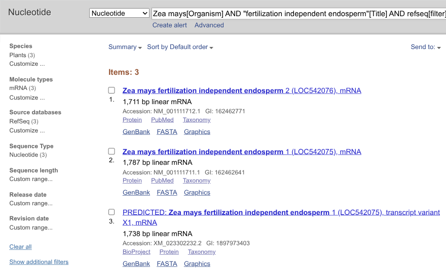
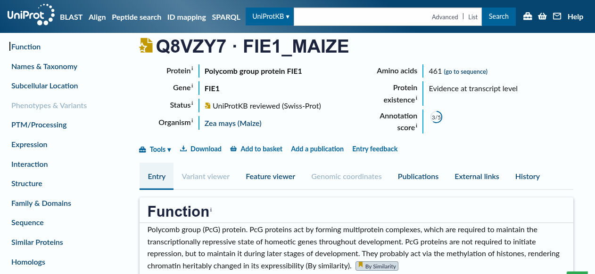
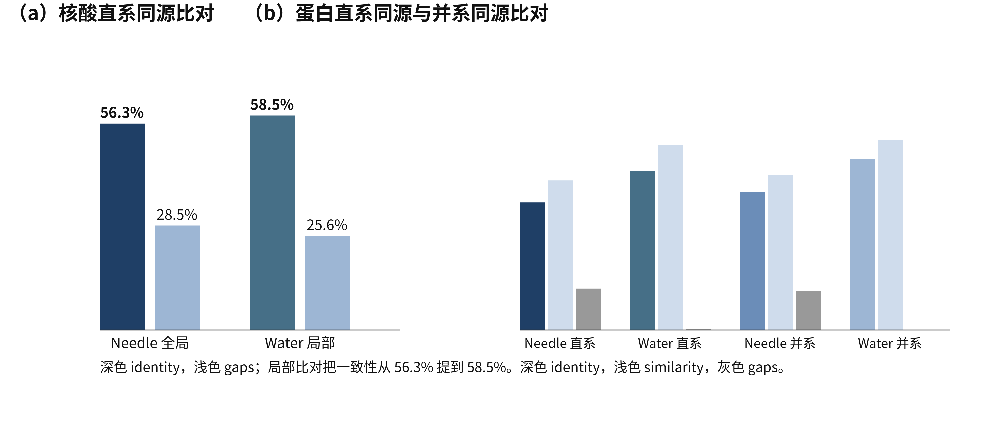
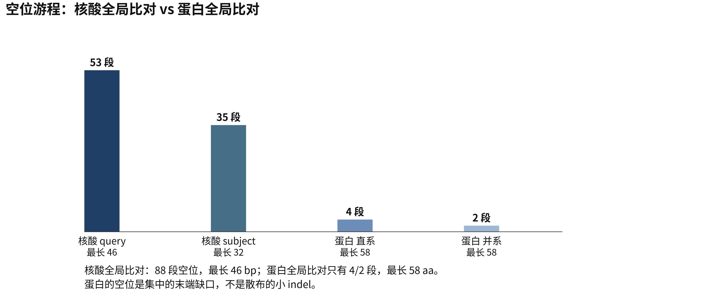

姓名：曹荣麟 班级：生技2402 学号：2024014209
实验掌握情况：基本掌握
你的疑问（最多 3 条）：见讨论区
研究分子仍是玉米 ZmFIE1（Gene ID 542075；RefSeq NM_001111711.1 / NP_001105181.1，461 aa）。实验一已确认：基因位于 4 号染色体负链，14 个外显子，CDS 169–1554，编码 PRC2 的 WD40 亚基；玉米基因组复制产生 FIE1/FIE2 一对旁系同源基因，FIE1 的母源等位基因在胚乳中去甲基化后激活。
任务 1.1 按题目要求检索人 EGF；任务 1.3 使用研究分子 ZmFIE1 检索同源序列。两项任务的检索对象和结果分别标注。
方法：Nucleotide 库输入 "human epidermal growth factor"[All Fields] AND refseq[filter]，ESummary 逐条取回登录号与标题。
结果：62 条。按基因归类，ERBB2 31 条、EGFR 10 条、EGF 本身 5 条（NM_001963.6 为 variant 1），其余为 ADGRF1/ADGRE3、DLK1、GPN3、CDK12 以及 3 条非人记录。把 "human" 从关键词移到物种过滤（"Homo sapiens"[Organism]）后反而有 1,475 条：鼠、大鼠、牛、犬、鸡的 EGF 家族都进来了。关键词命中的是“题目或注释里出现过 EGF”，不等于“编码 EGF 配体”；refseq[filter] 也只保证 RefSeq，不保证物种。
方法：Protein 库 "Homo sapiens"[Organism] AND mitochondrion[filter]，再加 refseq[filter]。
结果：886,234 条降到 39 条。39 条 = 13 个蛋白 × 3 个人类基因组（现代人、尼安德特人、丹尼索瓦人）。现代人的 13 条全部是氧化磷酸化链的膜蛋白：7 个复合体 I 亚基（ND1–ND6、ND4L）、3 个复合体 IV 亚基（COX1–3）、2 个 ATP 合酶 F0 亚基（ATP6、ATP8）、1 个细胞色素 b。线粒体自身基因组只编码这 13 个蛋白，其余约 1,500 种蛋白由核基因编码后输入；检索结果中的 13 个蛋白参与氧化磷酸化过程。
选定分子：玉米 ZmFIE1。检索从 Gene 542075 出发，用 ELink 取 gene_nuccore_refseqrna 与 gene_protein_refseq；没有 RefSeq 直系记录的物种，用 Gene 记录对应的 XM_/XP_ 预测序列，并保留版本号与标题。
直系同源候选序列选自拟南芥、水稻、高粱、小麦和大麦；并系同源候选序列选自玉米、水稻、高粱、小麦和短柄草。表中“Paralog”表示相对于 ZmFIE1 的关系，并非同一基因组内的 5 个拷贝；跨物种序列的具体同源关系仍需基因树验证。
| organism | Ortholog / Paralog | mRNA accession | mRNA length | protein accession | protein length |
|---|---|---|---|---|---|
| Arabidopsis thaliana | Ortholog | NM_112965.1 |
1,563 nt | NP_188710.1 |
369 aa |
| Oryza sativa | Ortholog | NM_001422905.1 |
1,993 nt | NP_001409834.1 |
376 aa |
| Sorghum bicolor | Ortholog | XM_002443778.2 |
1,775 nt | XP_002443823.1 |
449 aa |
| Triticum aestivum | Ortholog | XM_044566685.1 |
1,603 nt | XP_044422620.1 |
378 aa |
| Hordeum vulgare | Ortholog | XM_045102776.1 |
1,955 nt | XP_044958711.1 |
476 aa |
| Zea mays | Paralog | NM_001111712.1 |
1,711 nt | NP_001105182.1 |
379 aa |
| Oryza sativa | Paralog | XM_015793634.2 |
1,725 nt | XP_015649120.1 |
466 aa |
| Sorghum bicolor | Paralog | XM_002443777.2 |
1,749 nt | XP_002443822.1 |
379 aa |
| Triticum aestivum | Paralog | XM_044588536.1 |
1,386 nt | XP_044444471.1 |
461 aa |
| Brachypodium distachyon | Paralog | XM_003571455.4 |
1,861 nt | XP_003571503.1 |
380 aa |
核酸与蛋白 FASTA 各保存研究对象及表中 10 条候选，逐条完整标题见对应 FASTA 的 defline。水稻 466 aa、小麦 461 aa 的条目标题为“FIE1-like”。
序列命名与分类。 水稻 466 aa 与小麦 461 aa 的 RefSeq 标题均为“FIE1-like”，但根据序列长度和相似性，本次暂将其归入 FIE2 支；水稻 376 aa、小麦 378 aa 条目暂归入 FIE1 支。上述分类仍需全长基因树进一步确认，不能仅依据 FIE1/FIE2 名称判定同源关系。
同源关系。 直系同源基因由物种分化产生，并系同源基因由基因复制产生，两者功能均可能分化。关系取决于比较对象：若水稻 FIE2 与玉米 FIE2 属于同一复制支系，则前者相对 ZmFIE1 为并系候选、相对 ZmFIE2 为直系候选；这一判断还需基因树支持。
[Organism]、[Gene Name]、[Title]、[Accession]、[SLEN]、[prop] 和 refseq[filter] 可用于限定检索条件；querytranslation 可查看 Entrez 对检索式的解析；ELink 的 nuccore → protein → gene → pubmed 可用于追踪不同数据库中的关联记录。
登录号会回收。旧文献里的 NP_005623 现在对应 calpain-15，NM_003001 现在对应 SDHC；只记 accession 不记 version 和 title 会直接查错分子。本次 FIE1 的 NM_001111711.1 与 NP_001105181.1 都逐条核对了版本和标题。
使用物种、标题和 refseq[filter] 限定条件检索 NCBI Nucleotide，获得 3 条玉米 FIE mRNA 记录（图 1），其中 NM_001111711.1 和 XM_023302232.2 对应 Gene 542075，NM_001111712.1 对应 Gene 542076。两条 FIE1 转录本长度相差 49 nt。

| 数据库 | 收录内容 | 与本次的关系 |
|---|---|---|
| ENA | EMBL/GenBank/DDBJ 的欧洲核酸分部，含原始提交、EST、基因组与转录组 | ZmFIE1 的原始 mRNA 提交 AY061964 |
| UniProtKB | Swiss-Prot（人工校核）与 TrEMBL（自动注释） | Q8VZY7（FIE1_MAIZE，Reviewed，461 aa） |
| Ensembl | 多物种基因组注释、转录本、变异、同源基因 | 玉米基因 Zm00001eb173090 |
| ArrayExpress | 功能基因组学实验与表达数据（现并入 BioStudies） | 本次未展开 |
| PDBe | 大分子三维结构 | 玉米 FIE1 没有实验结构 |

Ensembl。 基因 Zm00001eb173090（fie1）位于 Zm-B73-REFERENCE-NAM-5.0 4 号染色体 37,782,884–37,788,757，负链；规范转录本 Zm00001eb173090_T001，cDNA 1,815 nt。NCBI Gene 记录的基因区间到 37,788,773，比 Ensembl 多 16 bp；RefSeq NM_001111711.1 是 1,787 nt、461 aa。同一基因在三套注释里的边界和转录本长度并不完全一致，引用坐标时必须写明来源。
ENA。 AY061964 版本 3（2004-12-14），1,787 bp，CDS 169..1554，蛋白 AAL35973.1。它与 NCBI NM_001111711.1 的序列长度和 CDS 边界一致；这两项信息本身不足以证明序列逐位一致或确定记录的校核来源。
ENA AY061964（EMBL） |
NCBI NM_001111711.1（GenBank） |
|
|---|---|---|
| 头部 | ID AY061964; SV 3; linear; mRNA; STD; PLN; 1787 BP. |
LOCUS NM_001111711 1787 bp mRNA linear PLN 28-APR-2025 |
| 版本 | SV 3，2004-12-14 |
NM_001111711.1，2025-04-28 |
| 特征 | FT CDS 169..1554，/protein_id="AAL35973.1" |
同样 CDS 169..1554，/protein_id="NP_001105181.1" |
| 交叉引用 | DR GOA; Q8VZY7、DR InterPro; IPR001680 等 |
db_xref="UniProtKB/Swiss-Prot:Q8VZY7"、GeneID、InterPro 写在特征行内 |
PDBe。 UniProt Q8VZY7 没有 PDB 交叉引用，PDBe 里查不到玉米 FIE1 的实验结构。WD40 重复的三维构架只能靠同源建模或其它物种的同源蛋白外推；这也是本次没有把结构比较写进结果的原因。
对象：① 核酸：ZmFIE1 mRNA NM_001111711.1（1,787 nt）vs 水稻 FIE1 候选 NM_001422905.1（1,993 nt）；② 蛋白：NP_001105181.1（461 aa）vs 水稻 FIE1 候选 NP_001409834.1（376 aa）；③ 蛋白并系对照：NP_001105181.1 vs 玉米 FIE2 NP_001105182.1（379 aa）。
工具：EBI Job Dispatcher 的 EMBOSS 6.6.0；Needle 为 Needleman–Wunsch 全局比对，Water 为 Smith–Waterman 局部比对；gap open 10.0、gap extend 0.5。核酸用 EDNAFULL 与 EDNAMAT，蛋白用 EBLOSUM62；另用 EBLOSUM45、EBLOSUM80 检查矩阵对蛋白比对的影响。
| # | 序列对 | 程序 | 矩阵 | 长度 | Identity | Similarity | Gaps | Score |
|---|---|---|---|---|---|---|---|---|
| 1 | ZmFIE1 vs OsFIE1 mRNA | Needle | EDNAFULL | 2,204 | 1,240 (56.3%) | 56.3% | 628 (28.5%) | 3,737.0 |
| 2 | 同上 | Needle | EDNAMAT | 2,204 | 1,240 (56.3%) | 56.3% | 628 (28.5%) | 3,737.0 |
| 3 | 同上 | Water | EDNAFULL | 2,106 | 1,233 (58.5%) | 58.5% | 540 (25.6%) | 3,755.5 |
| 4 | 同上 | Water | EDNAMAT | 2,106 | 1,233 (58.5%) | 58.5% | 540 (25.6%) | 3,755.5 |
| 5 | ZmFIE1 vs OsFIE1 蛋白 | Needle | EBLOSUM62 | 462 | 268 (58.0%) | 314 (68.0%) | 87 (18.8%) | 1,475.0 |
| 6 | 同上 | Water | EBLOSUM62 | 368 | 266 (72.3%) | 310 (84.2%) | 1 (0.3%) | 1,475.0 |
| 7 | 同上 | Needle | EBLOSUM45 | 462 | 268 (58.0%) | 316 (68.4%) | 87 (18.8%) | 1,791.0 |
| 8 | 同上 | Needle | EBLOSUM80 | 462 | 268 (58.0%) | 315 (68.2%) | 87 (18.8%) | 2,343.0 |
| 9 | ZmFIE1 vs ZmFIE2 蛋白 | Needle | EBLOSUM62 | 461 | 289 (62.7%) | 324 (70.3%) | 82 (17.8%) | 1,585.0 |
| 10 | 同上 | Water | EBLOSUM62 | 372 | 289 (77.7%) | 321 (86.3%) | 0 (0.0%) | 1,585.0 |
核酸全局比对共 628 个空位列，拆成 88 段游程：query 53 段、subject 35 段，最长一段 46 bp。按 query 坐标分区：5′UTR（1–168）353 列，identity 29.7%，空位列 61.5%；CDS（169–1554）1,505 列，identity 66.5%，空位列 15.7%；3′UTR（1555–1787）346 列，identity 38.7%，空位列 50.6%。CDS 内的空位少而散，UTR 的空位多而集中。局部比对把空位列降到 540、最长游程降到 33 bp，但 5′/3′UTR 的空位率仍有 55.6% 和 47.9%，表明本次比对中 UTR 区域的空位率仍较高。
蛋白全局比对有 87 个空位列、4 段游程，最长 58 aa；其中两端缺口对应 query 的 1–58 和 435–461 位，另有两个单字符内部缺口。比对空位以末端集中缺口为主。Water 保留 query 64–431 对 subject 6–372，空位降到 1 个，identity 从 58.0% 升到 72.3%。
核酸比对。 四组核酸比对的 Length / Identity / Gaps / Score 在 EDNAFULL 与 EDNAMAT 下逐项相同。脚本逐位统计显示，两条序列均不含 A/C/G/T 以外的碱基；这两种矩阵在本次所涉及的碱基打分上相同。
蛋白比对。 EBLOSUM62 / 45 / 80 三组 Needle 的 identity（58.0%）、gaps（18.8%）和比对路径相同，similarity 分别为 68.0–68.4%，score 分别为 1,475、1,791 和 2,343。本次更换矩阵后，比对路径未变，但 similarity 与 score 发生了变化；不同矩阵的原始分数不宜直接比较。
核酸比对的 identity 相差 2.2 个百分点（56.3% → 58.5%）。Water 覆盖 query 9–1770、subject 77–1986，即分别裁去两端 8 / 17 nt 和 76 / 7 nt。
蛋白比对的 identity 相差 14.3 个百分点（58.0% → 72.3%）。全局比对中，ZmFIE1 的 N 端 1–58 和 C 端 435–461 对应空位；局部比对则主要保留中间区域。并系对照的 Needle 结果为 62.7% identity / 17.8% gaps，Water 结果为 77.7% identity / 0 gaps。


Entrez 字段和过滤条件决定检索范围，命中记录需结合物种、版本与注释逐条核对。全局比对用于比较序列整体，局部比对突出相似片段；identity 与空位比例应结合覆盖范围解读，不能单凭相似性确定同源关系。
任务 1.1 按要求检索人 EGF；任务 1.3 使用实验一选定的研究分子 ZmFIE1，两组结果应分别解读。
本次跨物种选取 FIE2 序列作为 ZmFIE1 的并系同源序列。水稻和小麦的 466/461 aa 条目虽然标注为“FIE1-like”，但根据序列长度和相似性暂归入 FIE2 支，仍需全长基因树进一步确认。同源关系不能仅凭基因名称判定。
ENA 与 RefSeq 记录的序列长度均为 1,787 nt，CDS 边界均为 169–1554，记录格式和交叉引用有所不同。Ensembl 的基因边界为 37,782,884–37,788,757，规范转录本为 1,815 nt，与 NCBI 记录的 37,788,773 终点及 1,787 nt 转录本不完全一致；使用时应注明注释来源。
全局比对适于考察序列的整体对应关系，局部比对则有助于分析相似区域。本次蛋白全局比对在 ZmFIE1 两端出现合计 85 aa 的空位，局部比对主要保留中间区域，identity 为 72.3%。核酸全局比对共有 628 个空位列、88 段空位游程；按 query 区域统计，CDS 的空位率为 15.7%，两端 UTR 的空位率较高。